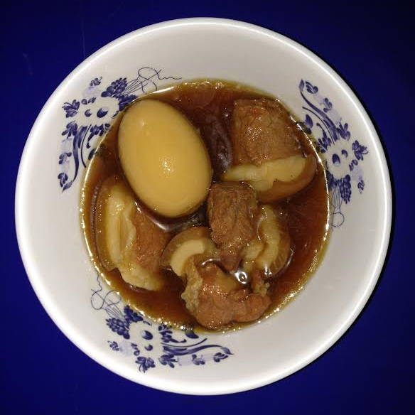

Thit Kho

Description
A Vietnamese braise pork and eggs recipe.
Ingredients
For marinade
- 2 lbs pork belly, sliced
- 2 small shallots, minced
- 4 garlic cloves, minced
- 4 tbsp nuoc mam
- 2.5 tbsp Maggi seasoning
- 1 tbsp brown sugar (optional)
- Freshly cracked black pepper
For caramel sauce
- 4 tbsp sugar
- 1/2 cup water (or 1.5 tbsp olive oil)
- 3/4 cup water
- 1 can Coco Rico coconut soda
- 1.5 tsp salt
- 1/2 tsp pepper
- 9 hard boiled eggs
Steps
- Marinate pork belly with garlic, shallots, soy sauce, nuoc mam, brown sugar
- Add olive oil to a pot and caramelize sugar over medium heat.
- Add marinated pork belly and cook until browned (about 5 minutes).
- Add Coco Rico, water, salt, and pepper. Let braise for 2 hours.
- Add in hard boiled eggs about 45 before serving.